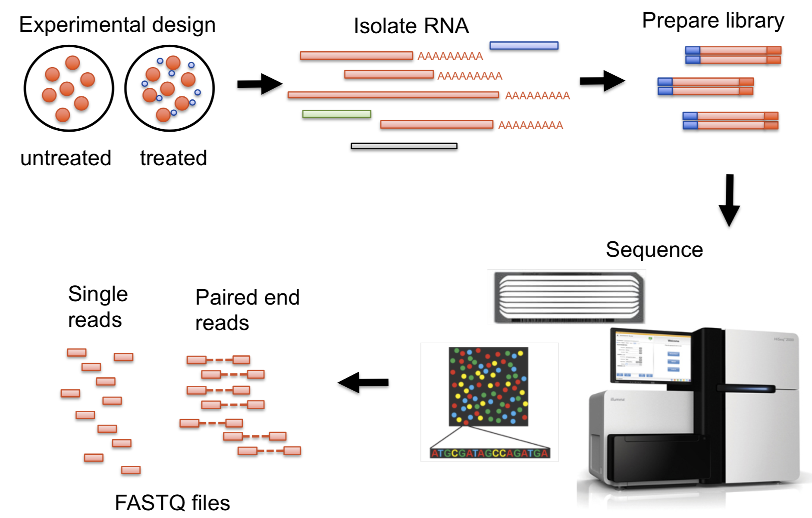

@SEQ_ID1
GATTTGGGGTTCAAAGCAGTATCGATCAAATAGTAAATCCATTTGTTCAACTCACAGTTT
+
!''*((((***+))%%%++)(%%%%).1***-+*''))**55CCF>>>>>>CCCCCCC65
@SEQ_ID2
CGGAAGAACAGGCAACCTAAGCACAATCGGTATTGTCCGAATGTGGAACGGCTTACAGTC
+
@:D4B2B82:IH':<*)27)13+HF<(6H654".2CC&&DI,.E?@-*:+<+6++;$G$6Desvendando os Segredos dos Dados Biológicos: O Poder da Bioinformática
Marcel Ferreira
2024-09-09
Sobre mim
Física médica - IBB/UNESP (2011 - 2014);
Mestrado em Biotecnologia - IBB/UNESP (2015 - 2017);
Doutorado em Biotecnologia - IBB/UNESP (2017 - 2022);
Pós-doutorado em Genética - FMB/UNESP (2023 - );
Sobre mim - Interesses
Métodos alternativos ao uso de animais;
Identificação humana via DNA;
Biologia do tecido ósseo;
Biomateriais;
Regeneração tecidual;
Ciência aberta;
Bioinformática
O que é bioinformática?
- NIH: “Bioinformatics, as related to genetics and genomics, is a scientific subdiscipline that involves using computer technology to collect, store, analyze and disseminate biological data and information, such as DNA/RNA and amino acid sequences or annotations about those sequences.”
NIH
O que é bioinformática?
- NIH: “Bioinformatics, as related to genetics and genomics, is a scientific subdiscipline that involves using computer technology to collect, store, analyze and disseminate biological data and information, such as DNA/RNA and amino acid sequences or annotations about those sequences.”
NIH
O projeto Genoma

Genome - https://www.genome.gov/human-genome-project
O que é bioinformática?
- O que é um gene?
- O que é um genoma?
O que é bioinformática?
- O que é um gene?
- Os genes são formados por sequências de DNA e estão dispostos, um após o outro, em locais específicos dos cromossomos no núcleo das células. Eles contêm informações para a produção de proteínas específicas que levam à expressão de uma característica ou traço físico específico, como a cor do cabelo ou dos olhos, ou a uma função específica em uma célula.
- O que é um genoma?
- Um genoma é o conjunto completo de informações genéticas em um organismo.
O que é bioinformática?

Dogma central da biologia molecular

O que é bioinformática? - Era das ômicas

Multi-Omics - https://comics.dcv.fct.unl.pt/resources/
O que é bioinformática? - Era das ômicas
Bioinfomática - Ciência de dados

Dados biológicos
DNA

DNA

DNA
DNA
DNA
Adenina =
NC1=NC=NC2=C1N=CN2;Citosina =
C1=C(NC(=O)N=C1)N;Guanina =
C1=NC2=C(N1)C(=O)NC(=N2)N;Timina =
O=C1NC(=O)NC=C1C;
Sequências de DNA
- Convenção:
A,T,C,G;
- Formato de FASTA de arquivos;
- Extensões:
.fasta,.fa,.fas;
Sequências de DNA
>NC_000006.12:45328330-45551082 RUNX2 [organism=Homo sapiens] [GeneID=860] [chromosome=6]
ATTCGCCTCACAAACAACCACAGAACCACAAGTGCGGTGCAAACTTTCTCCAGGAGGACAGCAAGAAGTC
TCTGGTTTTTAAATGGTTAATCTCCGCAGGTCACTACCAGCCACCGAGACCAACAGAGTCAGTGAGTGCT
CTCTAACCACAGTCTATGCAGTAATAGTAGGTCCTTCAAATATTTGCTCATTCTCTTTTTGTTTTGTTTC
TTTGCTTTTCACATGTTACCAGCTACATAATTTCTTGACAGAAAAAAATAAATATAAAGTCTATGTACTC
CAGGCATACTGTAAAACTAAAACAAGGTTTGGGTATGGTTTGTATTTTCAGTTTAAGGCTGCAAGCAGTA
TTTACAACAGAGGGTACAAGTTCTATCTGAAAAAAAAAGGAGGGACTATGGCATCAAACAGCCTCTTCAG
CACAGTGACACCATGTCAGCAAAACTTCTTTTGGGGTAAGTGTTACCATTTTTAAAATCCTGTAAGATAT
...
Sequência de Proteínas
>NP_001015051.3 RUNX2 [organism=Homo sapiens] [GeneID=860] [isoform=b]
MASNSLFSTVTPCQQNFFWDPSTSRRFSPPSSSLQPGKMSDVSPVVAAQQQQQQQQQQQQQQQQQQQQQQ
QEAAAAAAAAAAAAAAAAAVPRLRPPHDNRTMVEIIADHPAELVRTDSPNFLCSVLPSHWRCNKTLPVAF
KVVALGEVPDGTVVTVMAGNDENYSAELRNASAVMKNQVARFNDLRFVGRSGRGKSFTLTITVFTNPPQV
ATYHRAIKVTVDGPREPRRHRQKLDDSKPSLFSDRLSDLGRIPHPSMRVGVPPQNPRPSLNSAPSPFNPQ
GQSQITDPRQAQSSPPWSYDQSYPSYLSQMTSPSIHSTTPLSSTRGTGLPAITDVPRRISGASELGPFSD
PRQFPSISSLTESRFSNPRMHYPATFTYTPPVTSGMSLGMSATTHYHTYLPPPYPGSSQSQSGPFQTSST
PYLYYGTSSGSYQFPMVPGGDRSPSRMLPPCTTTSNGSTLLNPNLPNQNDGVDADGSHSSSPTVLNSSGR
MDESVWRPY
Anotações biológicas

Anotações biológicas

Nome:
Marcel Ferreira;CPF:
123.456.789-0;Passaporte:
XXXXXXX;RA:
PAT123456;Username:
marceelrf;
Convenção de nomes de genes

Convenção de nomes de genes

Convenção de nomes de genes

- MARCH1 -> MARCHF1
- SEPT1 -> SEPTIN1
- OCT4* // POU5F1
Bancos de dados
Consórcios de bases de dados
Formato de dados
Formato de dados
Sequências (Texto);
Alinhamentos (Tabelas);
Expressão (Números);
Interações (Redes);
Estruturas 3D (Coordenadas);
Fluxograma
Fluxograma
Exemplo RNAseq
Fluxograma
Exemplo RNAseq (Haas e Zody 2010).
Dados de sequenciamento de DNA/RNA
Arquivo FASTQ:
Dados de sequenciamento de DNA/RNA
Dados de alinhamento
Formato
SAM/BAM(Li et al. 2009);Cabeçalho com metadados;
Arquivo tabular com 11 colunas obrigatórias;
QNAME (Query template NAME): Nome ou identificador do read, usado para rastrear a sequência de consulta;
FLAG: Código numérico que descreve propriedades do read (por exemplo, se está alinhado, se é parte de um par, etc.);
RNAME (Reference sequence NAME): Nome da sequência de referência (ex. cromossomo ou contig) à qual o read foi alinhado;
POS (Position): Posição inicial do alinhamento no genoma de referência (base 1);
CIGAR: Descrição do alinhamento, indicando como o read se relaciona com a sequência de referência (por exemplo, match, inserções, deleções).
Redes de correlação
Construção de redes de correlação
Redes de sinalização
Redes de sinalização (Lemes dos Santos Sanna et al. 2024; Shannon et al. 2003).
Vias de sinalização
Biologia sistêmica

Biologia sistêmica
Estudo das interações e do comportamento dos componentes de entidades biológicas, incluindo moléculas, células, órgãos e organismos;
“O todo é maior que a soma das partes”
KEGG

Coleção de bancos de dados on-line;
Genoma;
Vias metabólicas;
Substâncias químicas biológicas.
KEGG
Gene Ontology
Escores biológicos
Over Representation Analysis (ORA)
Abordagem amplamente utilizada para determinar se funções ou processos biológicos conhecidos estão super-representados (= enriquecidos) em uma lista de genes derivados de experimentos, por exemplo, uma lista de genes diferencialmente expressos (DEGs);
O valor de p pode ser calculado pela distribuição hipergeométrica (Boyle et al. 2004; Yu et al. 2012; Wu et al. 2021b);
Over Representation Analysis (ORA)
\[ p = 1-\sum_{i=0}^{k-1}{\frac{\binom{M}{i}\binom{N-M}{n-i}}{\binom{N}{n}}} \]
Né o número total de genes;Mé o número de genes que são anotados;né o tamanho da lista de interesse;ké o número de genes nessa lista que são anotados para o conjunto de genes;
{clusterProfiler}automatiza essa análise (Wu et al. 2021a);
Over Representation Analysis (ORA)
Exemplo: Suponhamos que temos 17.980 genes detectados em um estudo de microarray e 57 genes foram expressos diferencialmente. Entre os genes diferencialmente expressos, 28 são anotados em um conjunto de genes;
Gene Set Enrichment Analysis (GSEA)
- Método computacional usado para identificar grupos de genes (conjuntos de genes) que exibem padrões de expressão coordenados em diferentes estados biológicos (Subramanian et al. 2005; Mootha et al. 2003);
- É particularmente útil na análise de conjuntos de dados de expressão gênica em larga escala, como os gerados a partir de experimentos de microarray ou RNA-seq;
Gene Set Enrichment Analysis (GSEA)
Gene Set Variation Analysis (GSVA)
- Método não paramétrico e não supervisionado para estimar a variação do enriquecimento do conjunto de genes por meio de amostras de um conjunto de dados de expressão;
- O GSVA (Hänzelmann, Castelo, e Guinney 2013) realiza uma alteração nos sistemas de coordenadas, transformando os dados de uma matriz de gene por amostra em uma matriz de conjunto de genes por amostra, permitindo assim a avaliação do enriquecimento de vias para cada amostra;
Gene Set Variation Analysis (GSVA)
Trabalhos
Epigenética e fenotipagem forense por DNA - Long reads sequencing

Epigenética e fenotipagem forense por DNA

STR - Microsatalites
Epigenética e fenotipagem forense por DNA
Epigenética e fenotipagem forense por DNA

Comparação de sequenciamento de leituras curtas e longas.
Biomateriais e remodelamento ósseo
Remodelamento ósseo.
Biomateriais e remodelamento ósseo
Fatores de crescimento.
Desafios para uso de bioinformática
- Característica do tecido ósseo;
- Poucos conjuntos de dados disponíveis sobre interação com biomateriais;
OsteoBLAST
Projeto de mestrado;
Busca por um método alternativo para uso de animais;
Baseado em fosforilação de proteínas;
Microarray de peptídeos (PamChip);
\[ \chi = \sqrt{\frac{1}{N}\sum_{i=1}^N{(\frac{A_1[i] - A_2[i]}{1-|\sigma_1[i]-\sigma_2[i]|})^2}} \]
OsteoBLAST
OsteoBLAST - GSVA scores
OsteoBLAST - GSVA scores
OsteoCLUST
Busca por métodos para classificação de biomateriais ósseos;
Utiliza escores biológicos como: GSEA e GSVA;
Aprendizado não supervisionado;
Biomimética
- “Construção de unidades biomiméticas a partir de plasma rico em plaquetas associado ao fluído caótico utilizando misturadores estáticos: perspectivas de novos processos biotecnológicos para regeneração do tecido ósseo”.
Biomimética
Referências
ferreiramr_phd
Boyle, Elizabeth I., Shuai Weng, Jeremy Gollub, Heng Jin, David Botstein, J. Michael Cherry, e Gavin Sherlock. 2004. “GO::TermFinderopen Source Software for Accessing Gene Ontology Information and Finding Significantly Enriched Gene Ontology Terms Associated with a List of Genes”. Bioinformatics 20 (18): 3710–15. https://doi.org/10.1093/bioinformatics/bth456.
Chávez-Madero, Carolina, María Díaz de León-Derby, Mohamadmahdi Samandari, Carlos Fernando Ceballos-González, Edna Johana Bolívar-Monsalve, Christian Mendoza-Buenrostro, Sunshine Holmberg, et al. 2020. “Using chaotic advection for facile high-throughput fabrication of ordered multilayer micro- and nanostructures: continuous chaotic printing”. Biofabrication 12 (3): 035023. https://doi.org/10.1088/1758-5090/ab84cc.
Haas, Brian J, e Michael C Zody. 2010. “Advancing RNA-Seq Analysis”. Nature Biotechnology 28 (5): 421–23. https://doi.org/10.1038/nbt0510-421.
Hänzelmann, Sonja, Robert Castelo, e Justin Guinney. 2013. “GSVA: Gene Set Variation Analysis for Microarray and RNA-Seq Data”. BMC Bioinformatics 14 (1). https://doi.org/10.1186/1471-2105-14-7.
Lemes dos Santos Sanna, Paula, Liebert Bernardes Carvalho, Camila Cristina dos Santos Afonso, Kassia de Carvalho, Rogério Aires, Jennyffer Souza, Marcel Rodrigues Ferreira, et al. 2024. “Adora2A Downregulation Promotes Caffeine Neuroprotective Effect Against LPS-Induced Neuroinflammation in the Hippocampus”. Brain Research 1833 (junho): 148866. https://doi.org/10.1016/j.brainres.2024.148866.
Lewis, Dyani. 2021. “Autocorrect Errors in Excel Still Creating Genomics Headache”. Nature, agosto. https://doi.org/10.1038/d41586-021-02211-4.
Li, Heng, Bob Handsaker, Alec Wysoker, Tim Fennell, Jue Ruan, Nils Homer, Gabor Marth, Goncalo Abecasis, e Richard Durbin. 2009. “The Sequence Alignment/Map Format and SAMtools”. Bioinformatics 25 (16): 2078–79. https://doi.org/10.1093/bioinformatics/btp352.
Mootha, Vamsi K, Cecilia M Lindgren, Karl-Fredrik Eriksson, Aravind Subramanian, Smita Sihag, Joseph Lehar, Pere Puigserver, et al. 2003. “PGC-1α-Responsive Genes Involved in Oxidative Phosphorylation Are Coordinately Downregulated in Human Diabetes”. Nature Genetics 34 (3): 267–73. https://doi.org/10.1038/ng1180.
Shannon, Paul, Andrew Markiel, Owen Ozier, Nitin S. Baliga, Jonathan T. Wang, Daniel Ramage, Nada Amin, Benno Schwikowski, e Trey Ideker. 2003. “Cytoscape: A Software Environment for Integrated Models of Biomolecular Interaction Networks”. Genome Research 13 (11): 2498–2504. https://doi.org/10.1101/gr.1239303.
Subramanian, Aravind, Pablo Tamayo, Vamsi K. Mootha, Sayan Mukherjee, Benjamin L. Ebert, Michael A. Gillette, Amanda Paulovich, et al. 2005. “Gene Set Enrichment Analysis: A Knowledge-Based Approach for Interpreting Genome-Wide Expression Profiles”. Proceedings of the National Academy of Sciences 102 (43): 15545–50. https://doi.org/10.1073/pnas.0506580102.
Wu, Tianzhi, Erqiang Hu, Shuangbin Xu, Meijun Chen, Pingfan Guo, Zehan Dai, Tingze Feng, et al. 2021a. “clusterProfiler 4.0: A universal enrichment tool for interpreting omics data” 2: 100141. https://doi.org/10.1016/j.xinn.2021.100141.
Wu, Tianzhi, Erqiang Hu, Shuangbin Xu, Meijun Chen, Pingfan Guo, Zehan Dai, Tingze Feng, et al. 2021b. “clusterProfiler 4.0: A Universal Enrichment Tool for Interpreting Omics Data”. The Innovation 2 (3): 100141. https://doi.org/10.1016/j.xinn.2021.100141.
Yu, Guangchuang, Li-Gen Wang, Yanyan Han, e Qing-Yu He. 2012. “clusterProfiler: An R Package for Comparing Biological Themes Among Gene Clusters”. OMICS: A Journal of Integrative Biology 16 (5): 284–87. https://doi.org/10.1089/omi.2011.0118.